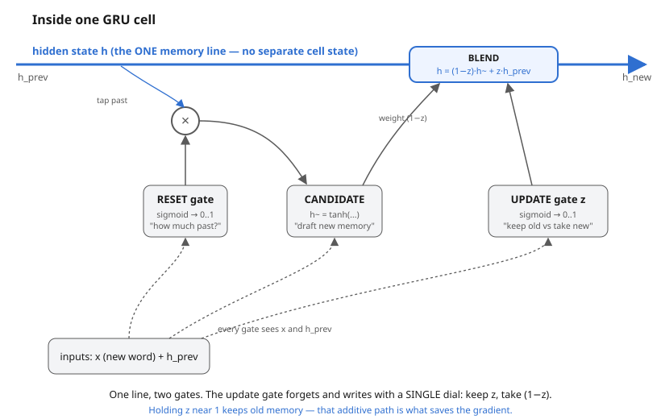
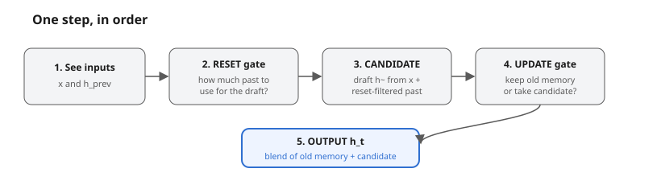
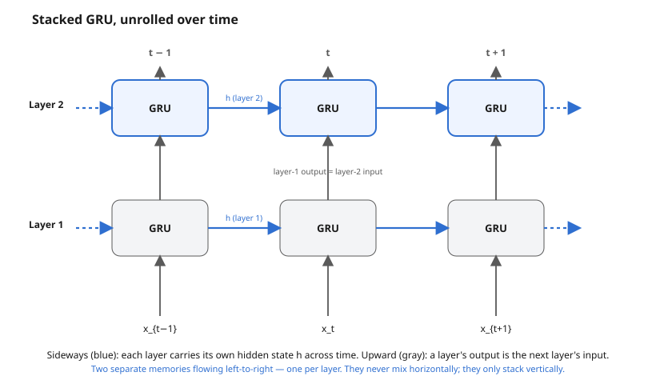

Gated Recurrent Unit
A GRU is a streamlined LSTM: same core trick (gated, mostly-additive memory so gradients survive), but with one memory line instead of two and two gates instead of three. Fewer parameters → trains faster, needs less data, often just as good.
#The setup
No separate cell state — just one memory vector — and two sigmoid gates.
#The two gates
- Update gate () — the main one. A single slider doing the forget and input jobs together: toward 1 = keep old memory, ignore new; toward 0 = drop old memory, take in new. Keeping is the opposite of adding (if you keep 70%, you take 30% new). Holding it near 1 across steps is what preserves long-range memory and the gradient.
- Reset gate () — decides how much of the past to ignore when drafting the new candidate memory. Lets the cell start fresh when the current input begins something new and old context would be noise.
One step in words: reset gate decides how much past to fold into a candidate new memory → update gate decides how much of that candidate to swap in versus how much old memory to keep.
#Forward math (defined bottom-up)
Symbols: squashes to (a dial), to (signed content), = elementwise multiply, = concatenation, each = a learned matrix. is the single memory state.
Define the two dials and the candidate first — each reads :
- Update dial — how much old memory to keep
- Reset dial — how much past to use when drafting
- Candidate — note the past is filtered by before drafting
Then blend old memory and candidate with the single update dial:
(PyTorch convention: near 1 keeps the old memory.) Gradient: the leading term is , so holding keeps the gradient highway open — same additive trick as the LSTM, with one dial instead of separate forget/input gates.
Params (one layer, PyTorch-style): three gates/candidate linear layers on concatenated → with one bias each. PyTorch's nn.GRU keeps separate input and recurrent biases, so count .
#Inside one GRU cell
Inputs and feed both gates and the candidate. The reset gate filters the past before the candidate is drafted; the update gate blends candidate vs. old memory at the very end.

Convention here matches the note and PyTorch: z near 1 keeps the old memory, so the candidate gets weight . Some textbooks flip this; the math is identical, only the label on the dial moves. (Caveat: the candidate above is the original Cho form ; PyTorch applies the reset gate after the hidden matmul: .)
#The step, as a sequence

#Stacking GRUs
Real models rarely use one layer. You stack them: the hidden-state sequence from layer 1 becomes the input sequence to layer 2, and so on. Two directions of information flow, and they don't mix:
- Sideways (through time): each layer keeps its own hidden state and passes it to its future self at the next timestep. Layer 1 and layer 2 each have a separate memory line.
- Upward (through depth): at each timestep, a layer's output is fed as the input to the layer above it. Lower layers tend to pick up short, local patterns; higher layers compose them into longer-range structure.

Only the top layer's outputs are usually read for predictions. More layers add representational depth but cost compute and can overfit on small data — same tradeoff as stacking anything. num_layers in PyTorch's nn.GRU does exactly this stacking for you.
#LSTM vs GRU
| LSTM | GRU | |
|---|---|---|
| Memories | 2 (cell + hidden) | 1 (merged) |
| Gates | 3 (forget, input, output) | 2 (update, reset) |
| Params | more | fewer |
| Strength | slight edge on very long / complex sequences | faster, leaner, less data |
Neither changes the loss (cross-entropy). In practice: try both, pick by validation. GRU is a sensible default for speed or limited data; LSTM when sequences are long and complex.
#30-second answer
A GRU merges the LSTM's two memories into one and uses two gates: an update gate (keep-old vs take-new in a single dial) and a reset gate (how much past to use when forming the candidate). Same gradient-saving idea as the LSTM, with less machinery.
#See also
- Long Short-Term Memory — the fuller version
- Recurrent Neural Networks — the base cell both upgrade
- Cross-Entropy Loss · Gradient Descent
- Transformers & Attention — what replaced RNNs for most sequence tasks